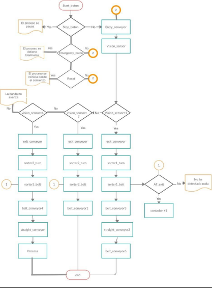
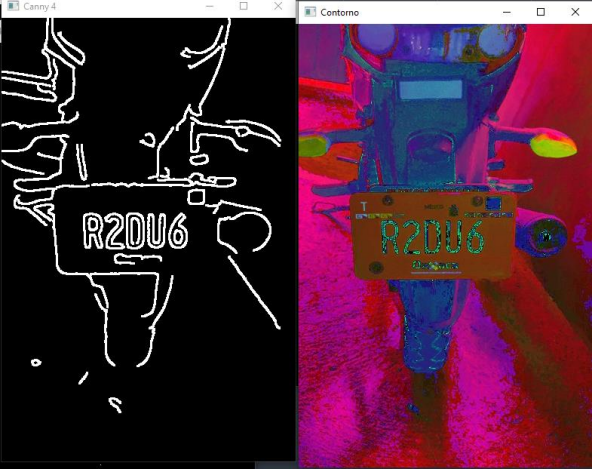

Labview
Codesys
Automatización
Se desarrollo en Factory I/O (software para la automatización en tiempo real) una estación clasificadora de piezas por colores, la cual fue programada en el software Codesys.
Se busca implementar este sistema en las grandes industrias de tal forma que se puedan reducir tiempos y optimizar todo el proceso de clasificación de distintos objetos, piezas, según sea el ámbito en el que se aplique. De igual manera se prevee un beneficio sobresaliente para los operarios de tal forma que los riesgos de accidentes se disminuyan.
DesarrolloEn base a la problemática previamente establecida se realizó la automatización del proceso de clasificación en este caso de piezas por colores. Dicho proceso se realizó mediante el uso de 2 softwares, Codesys y Factory I/O.
Clasificación de las variables de Codesys y Factory.
El proceso funciona de la siguiente forma:
Tablero: el tablero es en donde se encuentra nuestro centro de control de todo el proceso y los elementos presentes en el son los siguientes.
Tablero de control en Codesys
Inicio: su función es dar comienzo a todo el proceso, al momento de estar activo se visualiza la luz verde en un estado ON.
Stop: detiene el proceso de manera precisa, paralizando todo tal cual se encuentra, al estar activo se visualiza la luz naranja en un estado ON, para salir de este estado hay que dar inicio de nueva cuenta y el proceso continua desde donde se había quedado.
Reset: regresa los brazos a su estado OFF y reinicia los contadores, al estar activo se visualiza la luz amarilla en estado ON y queda listo para volver a iniciar.
Paro de emergencia: detiene todo el proceso inmediatamente y comienza a sonar la alarma indicando que está en estado ON, al estar activo este estado es imposible iniciar el proceso ya que bloquea los 3 botones antes mencionados dejándolos inactivos hasta que el botón de paro sea desactivado. Al desactivarlo el proceso estará detenido en espera de la señal de inicio.
Contadores: suma +1 y se visualizan en los distintos displays correspondientes a la pieza que se detecte por el sensor. La visualización es posible observarla en la parte inferior del tablero de control.
Bloque de función Contadores en Codesys
Banda de inicio: encargada de que las piezas que están sobre ella lleguen a la segunda banda. Su funcionamiento depende del estado activo en el tablero de control y también de las condiciones puestas en la programación mismas que mandan la señal para que al momento en que una pieza pasa por el vision sensor se activa un TOF en la banda 1 y permanece enclavado hasta que el brazo que salió para clasificar a la pieza se retraiga y se repite ese proceso n veces.
Bloque de función de inicio en Codesys
Detección de piezas: parte del proceso encargada de activar el movimiento de cualquiera de los 3 brazos, 1 a la vez, dependiendo que pieza sea censada por el vision sensor.
Detección de piezas en Codesys
Banda 2 (brazos): al momento que la banda de cualquiera de los 3 brazos se activa manda una señal y activa en conjunto a su banda correspondiente para transportar la pieza a su destino, estas están programas con un TON de modo que al llegar la pieza al brazo se active su respectiva banda y activando a su vez las bandas finales.
Pou de la segunda banda en Codesys
Final bandas: En esta etapa es la parte final de las bandas, las encargadas de hacer llegar las piezas a los contendores asignados.
Pou de las Bandas transportadoras finales en Codesys.
PLC_PRG
Diagrama de flujo
Clasificadora de piezas en Factory
Arduino
Procesamiento de señales en el dominio del tiempo
Para utliza a arduino como una tarjeta de adquisicion vamos a subir el .ino que nos va a permitir hacer uso del arduino y pósteriormente realizar la conexion en matlab con el puerto COM correspondiente.
Actividades a desarrollar:1.- Desarrollar en MATLAB-ARDUINO una interfaz de adquisición de datos. En la pantalla se debe desplegar en tiempo real la gráfica de la señal adquirida, el eje x debe ser respecto al tiempo. Los datos adquiridos se deben almacenar en un archivo. El sistema de adquisición se debe detener al terminar de muestrear. La frecuencia de muestreo Fs= 51.2 Hz, y el número de muestras N= 1024
2.- Generar una señal cuadrada unipolar de 2 volts pico-pico a 1 Hz.
3.-Implementar un filtro antialiasing de acuerdo a las características de la señal a muestrear.
4.- Adquirir, graficar en MATLAB y almacenar los datos en un archivo.
1.- Seleccionar un segmento de 1024 datos de la señal almacenada.
2.- Graficar en MATLAB el segmento seleccionado de la señal.
3.- Obtener y graficar en MATLAB el espectro de frecuencia de los 1024 datos seleccionados.
4.- Obtener y graficar en AUTOSIGNAL el espectro de frecuencia de los 1024 datos seleccionados.
1.- Seleccionar un segmento de 1000 datos de la señal almacenada.
2.- Graficar en MATLAB el segmento seleccionado de la señal.
3.- Obtener y graficar en MATLAB el espectro de frecuencia de los 1000 datos seleccionados.
4.- Obtener y graficar en AUTOSIGNAL el espectro de frecuencia de los 1000 datos seleccionados.
1.- Seleccionar un segmento de 130 datos de la señal almacenada
2.- Graficar en MATLAB el segmento seleccionado de la señal.
3.- Obtener y graficar en MATLAB el espectro de frecuencia de los 130 datos seleccionados.
4.- Obtener y graficar en AUTOSIGNAL el espectro de frecuencia de los 130 datos seleccionados
Forma de onda: Cuadrada
Amplitud:1.99 v
Frecuencia:1 Hz
Período: 1 s
Nombre del tipo de filtro: Pasivo pasa bajos
Frecuencia de corte: 5 Hz
Diagrama electrónico y cálculos del filtro antialiasing:
Cálculo:
Diagrama
Código de MATLAB (comentado):
Gráfica en MATLAB de 1024 muestras de señal adquirida

Espectro de señal en MATLAB de 1024 muestras de señal adquirida
Espectro de señal en AUTOSIGNAL de 1024 muestras de señal adquirida
Gráfica en MATLAB de 1000 muestras de señal adquirida:
Espectro de señal en MATLAB de 1000 muestras de señal adquirida
Espectro de señal en AUTOSIGNAL de 1000 muestras de señal adquirida
Gráfica en MATLAB de 130 muestras de señal adquirida

Espectro de señal en MATLAB de 130 muestras de señal adquirida
Espectro de señal en AUTOSIGNAL de 130 muestras de señal adquirida
Los resultados fueron los esperados, ya que la FFT nos muestra en la gráfica un pico predominante la cual fue de 1hz, sin embargo, la amplitud baja a la hora de aplicar la FFT a casi la mitad. Al reducir el número de muestras la gráfica de la FFT es menos exacta en los resultados.
La transformada rápida de Fourier nos ayuda a encontrar todas las frecuencias que se encuentran en nuestra señal muestreada, mostrándonos gráficamente cuáles predominan; es interesante saber que, aunque no nos demos cuenta las señales que obtenemos y creemos que es únicamente de una frecuencia que establecemos contiene múltiples señales que pueden afectar en nuestros análisis.
Python
Detección de placas vehiculares
Primero importamos las librerías que usaremos escribiendo “import + nombre de la librería”.
Podemos escribir “placa=[]”, esto significa que vamos a tener una variable llamada placa la cual estará vacía al inicio (se ocupara más tarde).
Hay dos formas por como podemos identificar a nuestra placa, uno usando la detección de bordes por medio de “canny” o identificar la placa por medio de detección de colores usando limites en escala HSV.
Visión con contornos, Vision con colores HSV
Una vez teniendo los valores del color que quiero, escribo los limites inferiores y superiores buscando que los valores que obtuve queden en medio.
Estos limites se guarda en una mascara para posteriormente aplicarle el algoritmo canny
Este es el resultado de la detección de colores. Los bordes no esta bien definidos por lo cual con la función cv2.dilate en iterations=3 se engruesa un poco mas los bordes.
Usando la funcion “findContours” econtraremos los contornos que tengamos en la variable “canny” donde tenemos la placa dectada.
Escribiremos un ciclo for para el findcontours y dentro del ciclo pondremos las funciones cv2 “contourArea”, “boundingReact”, “arcLength”. que nos servirán para encontrar las áreas que hay dentro de la máscara que se está analizando.
Escribimos una línea de impresión de área, corremos el programa y en la consola observamos las áreas que nos arroja. En mi caso pude notar que había un área muy grande y las otras era menos. Entonces puse un condicional “if” poniendo como limite el área mayor para que las áreas pequeñas no sean tomadas en cuenta.
Y por último con la funcion cv2 “drawContours” dibujaremos el contorno de la placa sobre la imagen original.
Al final como ya tenemos ubicada la placa, con la ayuda de pytesseract y Tesseract-OCR haremos un recorte de la placa mediante la siguiente línea:
Y con la siguiente línea se usará el aprendizaje de la base de datos de tesseract para detectar lo que está escrito dentro de la placa.
Estos serían los resultados obtenidos:
Matlab
La planta cuenta con un sensor de calor (lm35) el cual nos censa la temperatura del foco al encenderse, la planta tratará de mantener la misma temperatura por lo que la luminiscencia del foco será variable.
En esta ocasión se usará la Liberia fuzzy en Matlab para realizar el control difuso.
Fuzzy general
Parámetros del error MN
Parámetros del error PN
Parámetros del error z
Parámetros del error PP
Parámetros del error MP
Función de salida apagado
Función de salida MApagado
Función de salida Mencendido.
Función de salida Encendido
Reglas
Posterior a esto convertimos el archivo que nos dio Matlab a Arduino y subimos a nuestra placa Arduino uno.